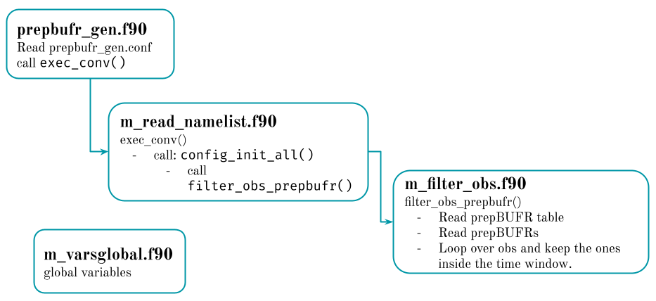

Conventional obs bufr
This section covers how to add new surface observations to prepBUFR and how to divide a file into smaller subsets.
One of the first challenges (besides to learning how to use GSI and deal with bufr files) was to incorporate surface observations from automatic stations to the assimilation. In Argentina there are very few official stations to cover the entire country but there are private automatic station network that could potentially help to improve weather forecasts thank to their higher frequency (10 minutes) and spacial resolution.
This requires to incorporate these new observations (available at Garcia et al. 2019) to the prepBUFR (so, be able to write fortran code and understand the bufr format). The 2 programs included here are based on the INPE/CPTEC modules and programs that are part of their operational assimilation system. I was lucky to visit CPTEC in 2019 where I learned how to work with these tools.
Add observations to a prepBUFR file
In the previous section I briefly explained how to read and write a bufr file. To add new observations to an existing file (o to a new file!) we use the same functions mentioned here and structure of the routine is also similar. But we also need to figure out how to read the new observations and how to create new reports.
The code I’m sharing here assume that the new observations are in csv format and has the following look:
| LAT | LON | ELV | STATION | yyyymmddhhmmss | TOB | QOB | UOB | VOB | PRSS |
|---|---|---|---|---|---|---|---|---|---|
| -19.0124 | -65.2921 | 2907 | “BLV102” | 20181111200000 | 28.9 | 0.00624936719941647 | 0 | -2.88088888888889 | 71950 |
| -17.4111 | -66.1744 | 2548 | “BLV124” | 20181111200000 | 29 | 0.00636021217641851 | -3.27390439689371 | -3.27390439689372 | 74280 |
| -16.8378 | -64.7925 | 195 | “BLV141” | 20181111200000 | 32.9 | 0.0439748860789023 | -1.34593847427853 | -1.34593847427853 | 50240 |
| -17.9747 | -67.08 | 4057 | “BLV154” | 20181111201500 | 19.2 | 0.00317768840091676 | -6.08364406830543 | -2.51992788174274 | 62030 |
| -17.6364 | -67.2003 | 3798 | “BLV157” | 120181111200000 | 19 | 0.00626217287136847 | -5.34737718159307 | -5.34737718159307 | 64460 |
If you want to convert the files available here into csv tables, here is an R script to do that.
The program read the configuration file that define where is the namelist and the prepbufr table and call a function that start the process. The namelist will list the name of the prepbufr to modify and the csv files with the new observations. The most important subroutine is adpsfc_rw_prepbufr():
- Reads the bufr file
- Reads the csv with new observations
- Decides if the observations fall into the time window
- Creates a new report type 187
- Write the bufr file
Filter observations in a prepBUFR
When I started using GSI I thought that the bufr files needed to have the observations for the assimilation window only, in other words, that GSI was not capable of filtering and ignoring the observations outside the assimilation window. I know, it does not make sense. Before I realized I was wrong I created a program to read a prepbufr and write a new one only with the observations in a specific time window.
The general structure is similar to the previous routine. In this case the read_namelist module will read the namelist and list all the available prepbufrs. The magic then happens inside filter_obs_prepbufr() that loops over each observation and check the difference between the observation time and the analysis time. If that difference is less that half the window, the observation is written in the new prepBUFR file.

The code
The source code is publicly available in this repository. Each source folder includes a compile file as example of how to compile the program. It needs the bufr and w3lib to work with times.
The run folder includes all the configuration files, namelists and bufr tables. The can be uses to run the programs using the example observations available in the example_obs folder.
Finally, if you ever need to do this for many files, the run_bash folder has 2 bash scripts that modify the namelist and run the programs in a loop.
prepbufr_tools
├── example_obs
│ ├── 2018111719.csv
│ ├── 2018111720.csv
│ ├── cimap.20181117.t20z.01h.prepbufr.nqc
│ └── prepbufr.gdas.20181117.t18z.nr.48h
├── README.md
├── run
│ ├── add_obs.conf
│ ├── namelist_conv.PREPOBS
│ ├── namelist_conv.PREPRW
│ ├── prepbufr_gen.conf
│ └── prepobs_prep.bufrtable
├── run_bach
│ ├── run_add_obs.sh
│ └── run_filter_obs.sh
├── src_add_obs
│ ├── compile
│ ├── m_adpsfc_rw.f90
│ ├── main_add_obs.f90
│ ├── m_convobs.f90
│ ├── m_vars_global.f90
└── src_filter_obs
├── compile
├── m_filter_obs.f90
├── m_read_namelist.f90
├── m_vars_global.f90
└── prepbufr_gen.f90Once again, this routines are based on the INPE/CPTEC modules and programs that are part of their operational assimilation system.